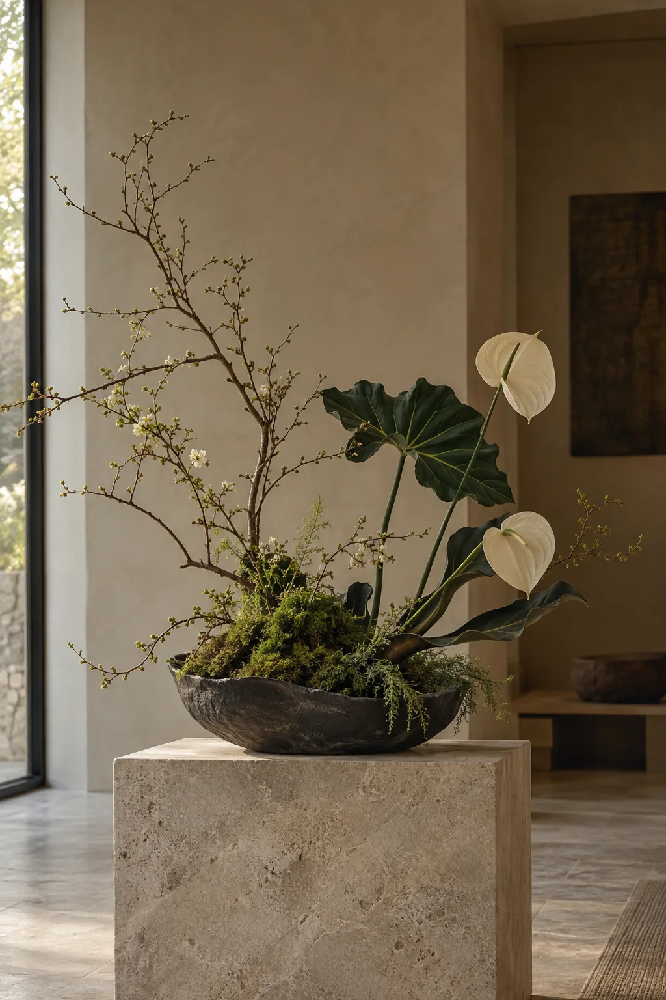
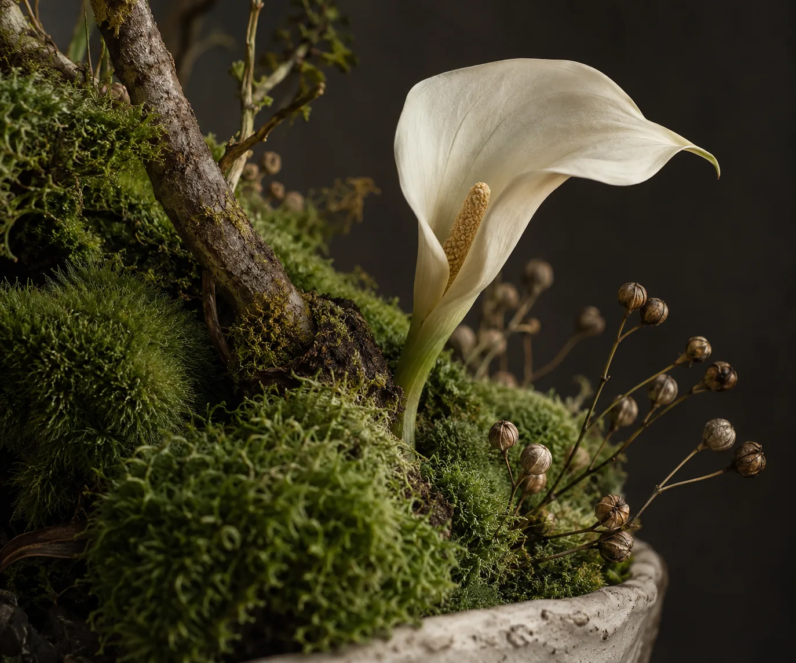
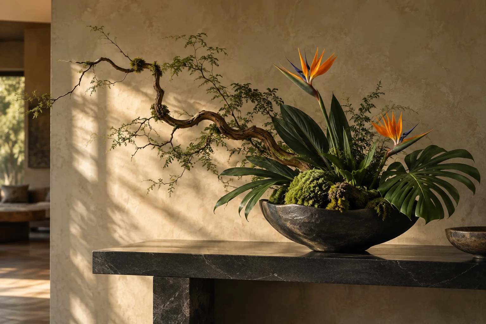
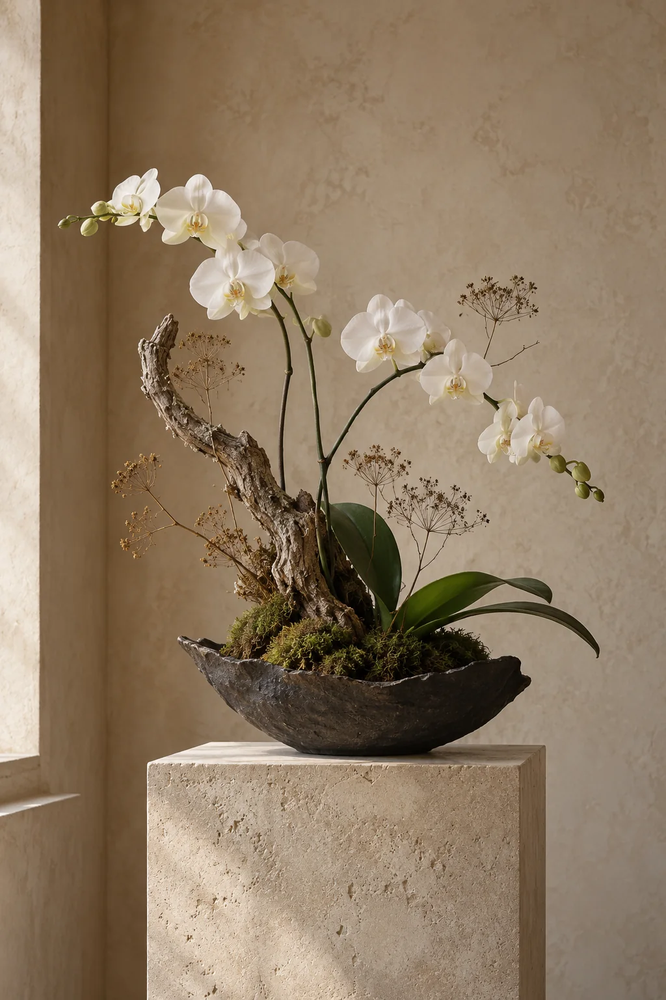
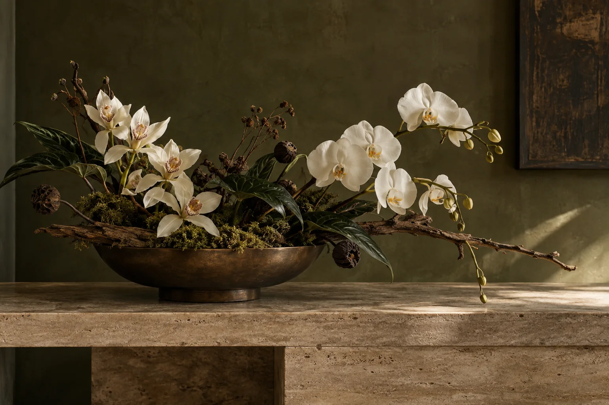
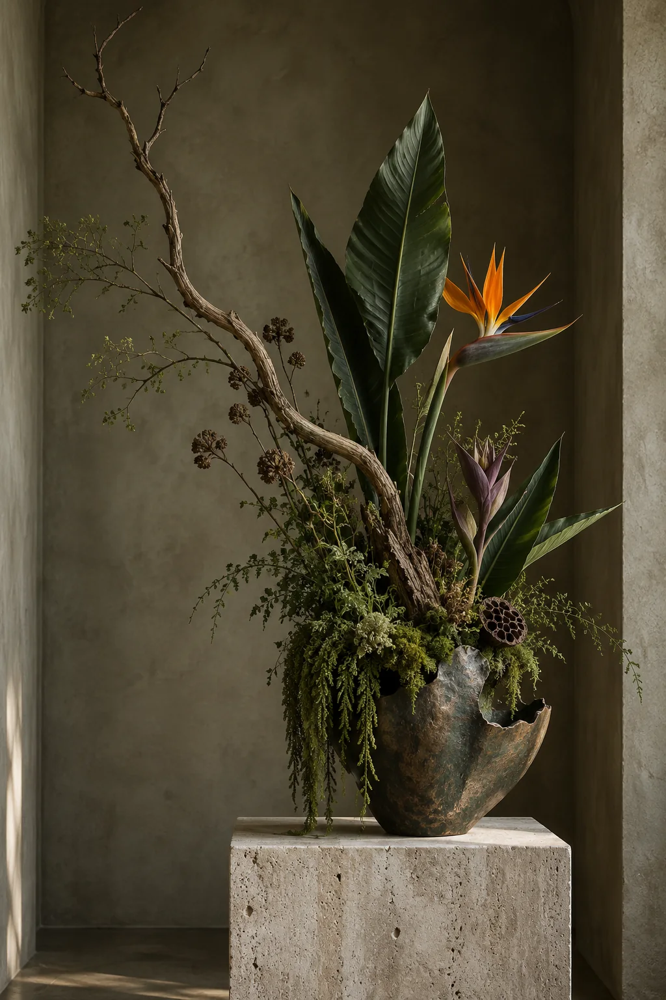
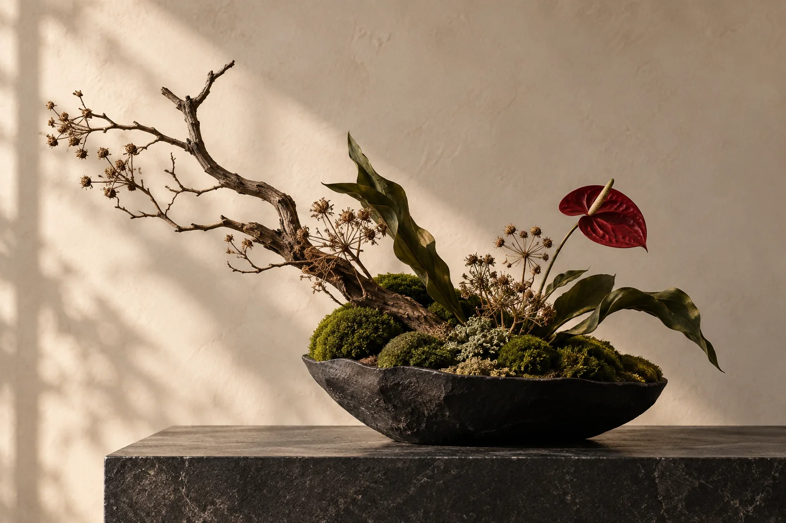
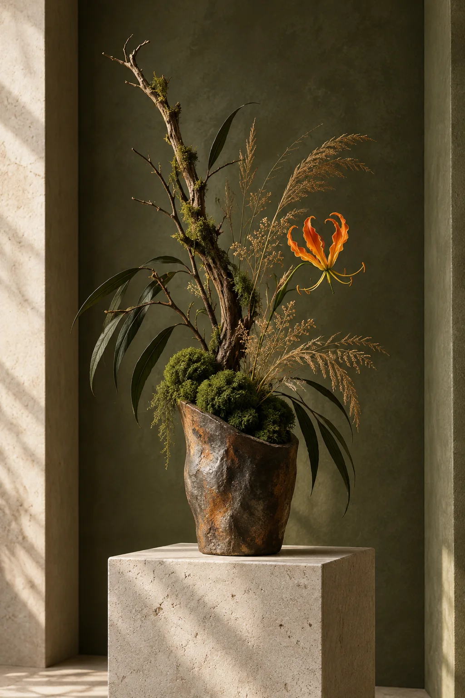
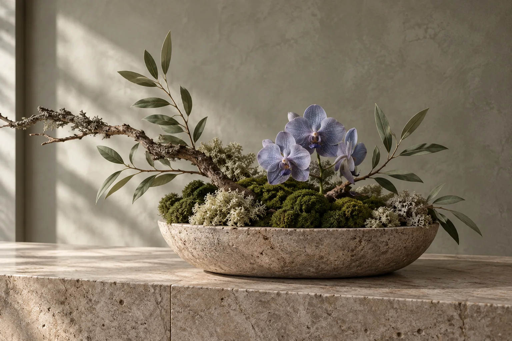

Study No. 01 · Limestone

Seasonal studies · One of one
More object than arrangement. Each piece is composed as a small landscape—defined by line, texture, negative space and the character of its materials.
A natural language
Branches set the gesture. Moss holds the ground. A restrained selection of botanicals completes the composition.

Study No. 01 · Limestone

Material study · Moss / Branch / Bloom
Study No. 02 · Evening light

Study No. 03 · Tropical line

Study No. 04 · White orchid

Study No. 05 · Orchid / Branch / Moss

Study No. 06 · Bird of paradise

Study No. 07 · Ruby detail

Study No. 08 · Saffron gesture

Study No. 09 · Violet / Sage / Stone
The making
We consider the room, its light, proportions and the way people move through it.
Materials are selected for gesture and texture, then shaped into a singular visual rhythm.
The finished piece is refined in relation to its setting—not designed in isolation from it.